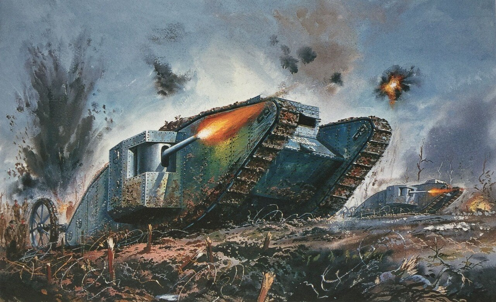
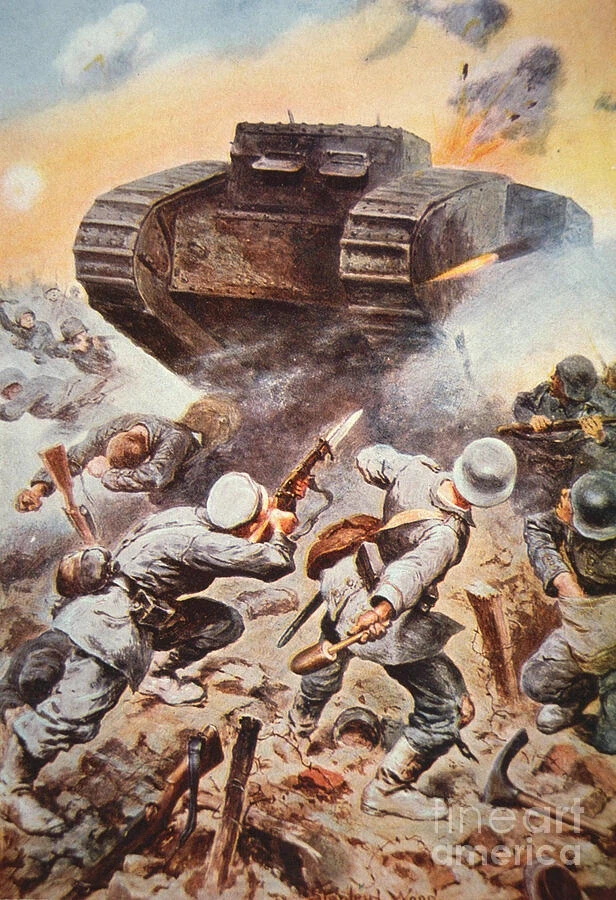

서부전선 이상없다(2022) 생샤몽 전차 등장장면

"악마가 온다!"
-익명 병사 (플레르-쿠르슬레트, 1916년 9월)
"갑자기 안개 속에서 형체가 모습을 드러냈다—마치 다른 세계에서 온 기계 같았고, 서투르고 비틀거리며 움직였지만 막을 수 없는 힘을 지니고 있었다. 총알은 지붕에 떨어지는 빗방울처럼 튕겨 나갔다."
-익명 병사 (플레르-쿠르슬레트, 1916년 9월)
"내 정맥에서 피가 얼어붙었다. 크레이터가 있는 전장에는 신비한 괴물 두 마리가 기어다니고 있었다. 괴물들은 절뚝거리고, 비틀거리고, 흔들리며 천천히 다가왔지만 어떤 장애물도 그들을 막을 수는 없었다. 그것들은 초자연적인 힘으로 계속 전진했다. 우리의 기관총 사격과 수류탄이 단순히 튕겨 나갔다. 따라서 그것들은 전방 포탄 구멍에서 우리 사병들을 쉽게 박살낸 다음 독일 전선을 직선으로 통과하여 플레르(Flers) 마을로 이동할 수 있었다."
-어느 독일군 특파원 (플레르-쿠르슬레트, 1916년 9월)
“우리는 적의 가장 강렬한 포격 아래 끔찍한 시간을 보냈습니다. 사방에서 포탄이 터졌습니다. 우리 포대는 그날 1,200발을 발사했고, 영국군이 우리를 향해 보낸 장갑차 중 하나를 격파했습니다. 그것은 이상한 물건이었어요. X자 모양에, 땅을 파는 듯한 두 개의 거대한 삽이 달려 있었습니다. 우리가 명중시켰고, 그건 멈췄지만, 보병 진지에서 큰 혼란을 일으킬 때까지는 멈추지 않았습니다. 병사들은 며칠 동안 그 얘기만 했고, 적이 어떤 새로운 악마의 장치를 만들어냈는지 궁금해했습니다.”
-뷔르템베르크 병사, 제13야전포병연대 (플레르-쿠르슬레트, 1916년 9월)가 부모에게 보낸 편지
“그것은 마치 육지의 배 같았고, 천천히 움직이며 모든 것을 짓밟았다. 우리는 안에 사람이 없다고 생각했다. 아마도 철사로 조종되는 것 같았다, 사람이 보이지 않았으니까. 우리 총알은 아무 소용이 없었고, 그것은 우리 참호를 넘었지만 포탄 구덩이에 빠져 멈췄다. 우리는 그것이 우리를 쫓아올까 봐 도망쳤지만, 그러지 않았다. 나중에 들으니 그 안에 수십 명의 병사가 있었다고 했지만, 나는 아무도 보지 못했다. 병사들은 그것을 ‘악몽 속의 괴물’이라고 불렀고, 아무도 다시 마주치고 싶어 하지 않았다.”
-익명 병사, 제111보병연대(솜, 1916년)의 영국군의 포로 심문
“새벽에 안개 속에서 이상한 굉음이 들렸고, 곧 그것들을 보았다—철로 된 거북이들이 포탄 구덩이와 철조망을 기어가며, 우리 소총으로는 멈출 수 없었다. 병사들은 탄약이 다 떨어질 때까지 총을 쏘았고, 이 기계들이 무적이라고 믿었다. 한 대가 200미터까지 접근했지만, 우리 야포가 포탄을 명중시키자 연기가 피어오르며 멈췄다. 보병들이 환호했지만, 포가 명중하기 전에 많은 이들이 도망쳤다. 우리는 이런 것에 대한 보고를 전혀 받지 않았고, 병사들은 이를 ‘악마의 마차(Teufelwagen)’라고 불렀다.”
-쿠르트 마이어 중위, 제5바이에른사단(솜, 1916년 9월)의 전쟁일지
“11월 20일 아침, 땅이 흔들리며 수십 대의 강철 괴물들이 일렬로 전진해 왔다. 내가 본 것 중 가장 많은 수였다. 그들은 우리의 철조망을 뭉개고 참호를 넘어 기관총을 쏘았다. 우리 기관총은 그들의 장갑에 스파크를 튀길 뿐 아무 효과가 없었고, 몇몇 병사들은 최후가 왔다고 외치며 도망쳤다. 다른 이들은 얼어붙은 듯 멈춰 서서 그 괴물들을 바라보았다. 우리는 끈으로 묶은 수류탄 다발로 그들의 궤도를 노리는 법을 배웠고, 한 대의 탱크는 궤도가 부서지며 멈췄다. 이튿날 우리는 근거리에서 야포를 사용하라는 명령을 받았지만, 공포는 여전히 남아 있었다. 병사들은 마치 그 기계들이 우리를 파괴하려는 의지를 가진 생명체인 양 말했다.”
-빌헬름 빌츠 대위(Oberleutnant Wilhelm Biltz), 제108보병연대(캉브레, 1917년 11월)의 회고록
"우리의 [휴전을 모색하는] 결정에 결정적인 영향을 미친 요인은 즉 두 가지였다. 전차(탱크)와 우리의 예비 병력이다. 적은 예상치 못한 엄청난 수의 전차를 사용했다. 전차들이 연막 속에서 갑자기 대규모로 출현하는 경우, 우리 병사들은 완전히 동요에 빠졌다."
-독일군 사령부 보고서 (1918년)

나중에는 차츰 대응법이 생겨났지만 처음 나타날때는 그야말로 듣도보도 못한 공포의 괴물이었다고 하며
보기만 해도 전의를 상실하고 도망가거나 항복하는 경우가 많이 생겨났다고 한다.

스타2 트레일러가 여기서 따왔네